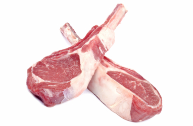

Calories in Meat > Lamb chop calories
Lamb chop calories
Lamb and mutton are both meat from sheep. Lamb is from sheep less than one year old, which makes the meat tender. On the other hand, mutton from adult sheep tends to be tough and higher in fat. Lamb is considered the more nutritious red meat option since sheep graze all day, resulting in lower fat content. It also contains essential nutrients such as zinc, selenium, and B vitamins. However, lamb and mutton can be quite expensive.
Nutritional Values per 100g:
- Calories – 526.6 kcal
- Protein – 7g
- Fat – 30g
Lamb chop calories are described in detail on the Calorie-Charts.info.
There are also: